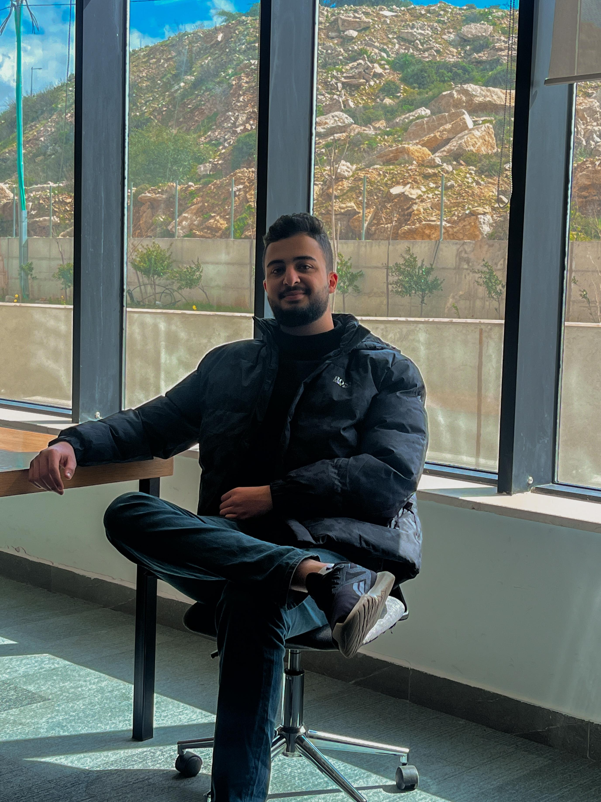

<h1>Abdalhameed Maree, a Computer Engineering student at Birzeit University (Student ID: 1220775), has developed strong programming skills in languages such as C, C++, Python, Dart, Flutter, Java, HTML, and CSS. His expertise extends to web development and problem-solving. Notable projects include implementing a simple web server using socket programming for a Network Project and creating a map simulation and Population census program for Palestine as part of a Data Structure Project. Abdalhameed is also involved in organizing programming competitions and enjoys coding, solving problems, and reading tech blogs in his free time.</h1>